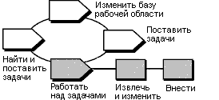

| Руководство по инструменту: Применение наборов изменений UCM в Rational ClearCase |
 |
|
| Связанные элементы |
|---|
ОбзорНа следующей диаграмме показан поток операций UCM. Затемненные области описаны в этой памятке. Поток операций UCM Примечание о терминологии: Операция ClearCase UCM схожа с понятием Порядок работы в RUP. Не стоит путать ее с концепцией RUP для операции. Операция UCM отслеживает версии, созданные при работе над задачей разработки. Операция включает в себя текстовый заголовок, описывающий ее, ИД пользователя создателя операции и набор изменений, идентифицирующий все созданные версии при работе с операцией. Когда вы готовы к изменению исходных файлов, необходимо задать представление разработки для операции. Необходимо задать операцию для представления разработки перед тем, как можно будет изменить файлы. Эта памятка по инструменту применима к Microsoft Windows. Этапы работы с инструментамиДля работы с операциями UCM: 1. Создайте или найдите и задайте набор операцийПри изъятии файлов или каталогов в проекте UCM потребуется указать операцию для отслеживания работы. Создайте новую операцию и задайте ее в текущем представлении.
Найдите и задайте операцию.Операции обслуживаются между рабочими сеансами. Выполните эти действия для поиска существующей операции и ее указания в представлении разработки. Из обозревателя ClearCase:
В окнах ClearCase:
2. Изъятие и изменение версийПеред изменением исходных файлов перейдите к представлению Разработка и изымите их. Изъятие делает версии файлов или каталогов доступными для записи в представлении.
3. Добавление работыДля сохранения записи текущего состояния файла добавьте его. При добавлении файлов или каталогов в VOB добавляются новые версии. Сведения о версиях записываются текущей заданной операцией. После добавления текущая операция остается в представлении.
|
© Copyright IBM Corp. 1987, 2006. Все права защищены.. |